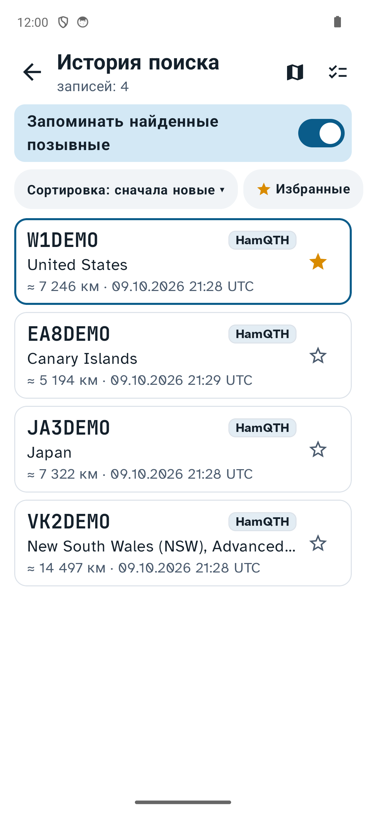
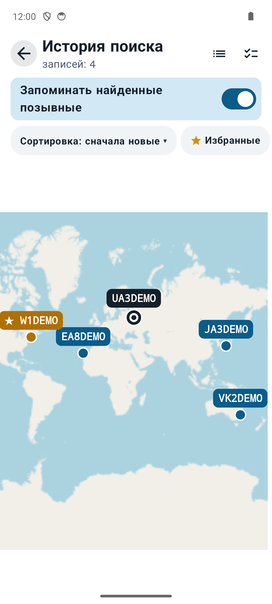

Аппаратный журнал радиолюбителя для телефона и компьютераA ham radio logbook for your phone and computer
Записывайте связи за несколько нажатий. Имя и город корреспондента программа возьмёт с QRZ.ru или QRZ.com, расстояние посчитает сама, журнал выгрузит в ADIF или в отчёт для соревнований. Бесплатно, исходный код открыт.Log a QSO in a few taps. The app fetches the station's name and city from QRZ.ru or QRZ.com, works out the distance and exports the log to ADIF or a contest report. Free and open source.

Что умеетWhat it does
Ввод в эфиреOn-air entry
Позывной, частота, RST — и всё. Подсказки из журнала, предупреждение о повторе, частота в килогерцах, кнопка «Следующая» для пайлапа.Callsign, frequency, RST — done. Suggestions from the log, dupe warning, frequency in kHz, a "Next" button for pile-ups.
QRZ.ru, QRZ.com и HamQTHQRZ.ru, QRZ.com and HamQTH
Имя, город и локатор приходят с QRZ.ru через XML API или по учётной записи сайта. Зарубежные позывные — с QRZ.com. Если везде пусто, страну и область подскажет HamQTH.Name, city and locator come from QRZ.ru (XML API or site account) and QRZ.com for foreign calls. If both are silent, HamQTH gives the country and region.
Режим соревнованийContest mode
CONTEST MODE: позывной и контрольный код на своей крупной клавиатуре — и следующая связь. Номер растёт сам или передаётся постоянный код (MO69, EU), можно вернуться и исправить. Справочник контестов с турами минитестов и таймером, отчёт ЕРМАК или Cabrillo по выбранному соревнованию — в два нажатия.CONTEST MODE: callsign and exchange on a big built-in keyboard — and on to the next. Serial numbers or a fixed exchange (MO69, EU), go back to fix a QSO. A contest book with minitest tours and a timer; a Cabrillo or ЕРМАК report for the chosen contest in two taps.
Работа с клавиатурыKeyboard only
С внешней клавиатурой на телефоне или на компьютере вся работа идёт без мыши и касаний: Пробел, Enter, ↑ для исправления последней связи, команды «20m», «CW» прямо в позывном.With an external keyboard on a phone, or on a computer, everything works without touching the screen: Space, Enter, ↑ to fix the last QSO, commands like "20m" or "CW" right in the callsign.
История поискаSearch history
Все найденные позывные с источником данных — как кэш: избранные, фильтры, карта, а без интернета карточка заполняется из истории.Every station looked up, with its data source — a cache with favourites, filters and a map; without internet a card is filled from it.
Голосовые заметкиVoice notes
Удержите «Добавить QSO» и говорите. Запись останется в карточке связи, её можно отправить в мессенджер.Hold "Add QSO" and speak. The note stays with the QSO and can be shared to a messenger.
Расстояние и картыDistance and maps
Азимут, расстояние и трасса на карте. Отдельная карта показывает всех, с кем вы работали.Bearing, distance and the path on a map. Another map shows every station you worked.
ДашбордDashboard
Статистика журнала в графиках: связи по дням, диапазоны, виды, страны, часы в эфире, расстояния. Период и фильтры — в одну строку.The log in charts: QSOs per day, bands, modes, countries, hours on the air, distances. Period and filters in one row.
Google ТаблицаGoogle Sheet
Один журнал на телефоне и компьютере: связи собираются в вашей Google Таблице, обмен — по кнопке «Синхронизировать».One log on phone and computer: QSOs are collected in your own Google Sheet, exchanged when you press "Sync".
ЭкспортExport
ADIF, CSV, ЕРМАК и Cabrillo. По умолчанию выгружаются только новые связи, а в карточке остаётся отметка с датой.ADIF, CSV, Cabrillo and ЕРМАК. By default only new QSOs are exported, and the card keeps a dated mark.
СправочникReference
Диапазоны РФ, план IARU, Морзе, Q-коды, калькуляторы кабелей, КСВ и антенн, страна по позывному. Работает без интернета.Band plans, Morse, Q-codes, cable, SWR and antenna calculators, country by callsign. Works offline.
ТелефонPhone






Компьютер: macOS, Windows, LinuxComputer: macOS, Windows, Linux
То же самое, что на телефоне, в окне на две части: слева журнал, справа карточка. Всё делается с клавиатуры, список клавиш — по F1.The same as on the phone, in a two-part window: the log on the left, the card on the right. Everything works from the keyboard; F1 lists the keys.